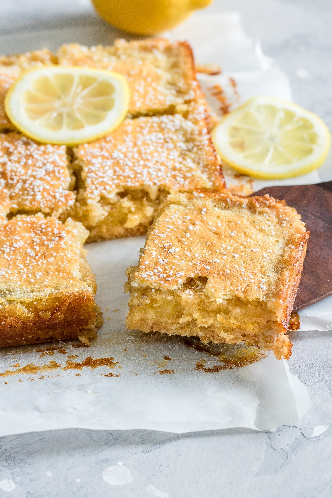

Lemon Bars

Description
Here we have one of my all time favorite recipes! Something this is sweet, but also sour... kinda like the chicken
but not haha. This recipe is extremely easy to create! No need to go out and buy all the ingredients, most will
already be in your pantry!
To see how you can make these delicious lemon bars at home, keep reading.
Ingredients
Shortbread Crust
- 1 cup unsalted butter, melted
- 1/2 cup granulated sugar
- 2 teaspoons pure vanilla extract
- 2 cups + 2 Tablespoons all-purpose flour
Lemon filling
- 2 cups granulated sugar
- 6 Tablespoons all-purpose flour
- 6 large eggs
- 1 cup lemon juice (about 4 lemons)
- optional: confectioners' sugar for dusting
Steps
- Preheat the oven to 325 degrees F (163 degrees C). Line the bottom and sides of a 9x13 baking pan
with parchment paper, leaving an overhang on the sides to lift the finished bars out. Set aside.
- Make the crust: Mix the melted butter, sugar, vanilla extract, and salt together in a
medium bowl. Add the flour and stir to completely combine. The dough will be thick. Press firmly into
prepared pan, making sure the layer of crust is nice and even. Bake for 20-22 minutes or until the edges are lightly
browned. Remove from the oven. Using a fork, poke holes all over the top of the warm crust (not all the way
through the crust). Set aside until step 4.
- Make the filling: Sift the sugar and flour together in a large bowl. Whisk in the eggs, then
the lemon juice until completely combined.
- Pour filling over warm crust. Bake the bars for 22-26 minutes or until the center is relatively set and no longer jiggles.
(Give the pan a light tap with an oven mitt to test). Remove bars from the oven and cool completely at room
temperature, then stick in the refrigerator for 1-2 more hours until pretty chilled.
- Once cool, lift the parchment paper out of the pan using the overhang on the sides. Dust with confectioners' sugar and cut
into squares before serving. For neat squares, wipe the knife clean between each cut. Cover and store leftover lemon bars in the
refrigerator for up to 1 week.
- Freezing Instructions: Lemon bars can be frozen for up to 3-4 months. Cut the cooled bars (without confectioners' sugar topping) into
squares, then place into a baking sheet. Freeze for 1 hour. Individually wrap each bar in aluminum foil or plastic wrap and place
into a large bag or freezer container to freeze. Thaw in the refrigerator, then dust with confectioners' sugar before serving.